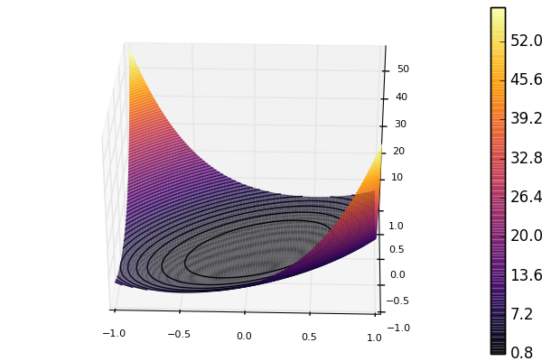

Preconditioning
The GradientDescent, ConjugateGradient and LBFGS methods support preconditioning. A preconditioner can be thought of as a change of coordinates under which the Hessian is better conditioned. With a good preconditioner substantially improved convergence is possible.
A preconditioner Pcan be of any type as long as the following two methods are implemented:
A_ldiv_B!(pgr, P, gr): applyPto a vectorgrand store inpgr(intuitively,pgr = P \ gr)dot(x, P, y): the inner product induced byP(intuitively,dot(x, P * y))
Precisely what these operations mean, depends on how P is stored. Commonly, we store a matrix P which approximates the Hessian in some vague sense. In this case,
A_ldiv_B!(pgr, P, gr) = copyto!(pgr, P \ A)dot(x, P, y) = dot(x, P * y)
Finally, it is possible to update the preconditioner as the state variable x changes. This is done through precondprep! which is passed to the optimizers as kw-argument, e.g.,
method=ConjugateGradient(P = precond(100), precondprep! = precond(100))though in this case it would always return the same matrix. (See fminbox.jl for a more natural example.)
Apart from preconditioning with matrices, Optim.jl provides a type InverseDiagonal, which represents a diagonal matrix by its inverse elements.
Example
Below, we see an example where a function is minimized without and with a preconditioner applied.
using ForwardDiff, Optim, SparseArrays
initial_x = zeros(100)
plap(U; n = length(U)) = (n-1)*sum((0.1 .+ diff(U).^2).^2 ) - sum(U) / (n-1)
plap1(x) = ForwardDiff.gradient(plap,x)
precond(n) = spdiagm(-1 => -ones(n-1), 0 => 2ones(n), 1 => -ones(n-1)) * (n+1)
f(x) = plap([0; x; 0])
g!(G, x) = copyto!(G, (plap1([0; x; 0]))[2:end-1])
result = Optim.optimize(f, g!, initial_x, method = ConjugateGradient(P = nothing))
result = Optim.optimize(f, g!, initial_x, method = ConjugateGradient(P = precond(100)))The former optimize call converges at a slower rate than the latter. Looking at a plot of the 2D version of the function shows the problem.

The contours are shaped like ellipsoids, but we would rather want them to be circles. Using the preconditioner effectively changes the coordinates such that the contours becomes less ellipsoid-like. Benchmarking shows that using preconditioning provides an approximate speed-up factor of 15 in this 100 dimensional case.